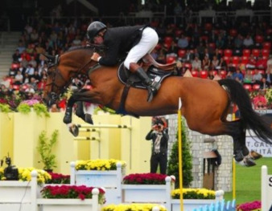

Big Star – Brytyjski Mistrz Parkuru
Big Star (ur. 2003) to holenderski wałach, który przeszedł do historii jako jeden z najbardziej utytułowanych koni skokowych XXI wieku. Pod siodłem brytyjskiego jeźdźca Nicka Skeltona, Big Star zdobył dwa złote medale olimpijskie, udowadniając swoją niesamowitą siłę, zwinność i czystość skoków. Jego kariera była naznaczona przerwami spowodowanymi kontuzjami, co tylko podkreśla jego determinację i odporność.
Złoty Medal Olimpijski (2016)
Największym osiągnięciem Big Stara było indywidualne złoto na Igrzyskach Olimpijskich w Rio de Janeiro w 2016 roku. Wcześniej, w Londynie (2012), zdobył złoto w konkursie drużynowym. Czysty przejazd w finale w Rio, po długiej rekonwalescencji po kontuzji, jest uznawany za jeden z najbardziej emocjonujących momentów w historii jeździectwa.
Dziedzictwo
Big Star jest uosobieniem doskonałego konia skokowego. Zakończył karierę w 2017 roku. Jego partnerstwo z Nickiem Skeltonem jest uznawane za modelowe w sporcie – połączenie wzajemnego zaufania i szacunku. Reprezentuje szczyt współczesnej hodowli koni sportowych i jest wzorem do naśladowania w dyscyplinie skoków.
Big Star
